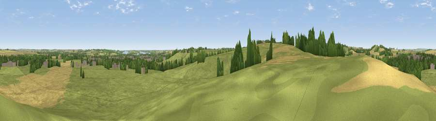

Viewpoint near Barleythorpe
#29981 in England · top 37% of its area beats it · near Barleythorpe · access?Where it is
The exact computed spot (SK 83925 09925). Click the marker for map links.
Public access: no public right of way or access land is recorded at this exact spot — it may be on private land. Computed from Natural England's CRoW access layer and OpenStreetMap rights of way — not the legal definitive map. Always verify locally.
The view, rendered

A 360° render of this exact spot computed from the terrain model, tree cover and land cover — summer colours, afternoon light, calibrated against photographs of famous viewpoints. Real trees, hedges and buildings will differ in detail.
The panorama
Grey silhouette: terrain skyline in each direction (720 bearings, Earth curvature and refraction included). Dashed green: skyline with trees (+15 m) and buildings (+8 m) as obstacles. Blue strip: how far the ground is visible on each bearing.
Where the view opens
Wedge length = distance to the farthest visible ground on that bearing (vegetation-aware). Rings at 10, 25 and 50 km.
What fills the view
57% grassland · 30% cropland · 9% woodland · 3% built-up
Angular shares of the visible panorama (visual magnitude), not map area. Landscape diversity 0.45 (0–1 Shannon).
Key numbers
More beautiful places nearby
The staircase of upgrades: each row has a higher view potential than everything closer. Driving times are estimates from straight-line distance, calibrated against real road routing — check an actual route before setting out.
| Place | Direction | Drive | Score |
|---|---|---|---|
| Cold Overton Park | SW · 2 km | ~5 min | 41.1 |
| Ranksborough Hill | NW · 2 km | ~6 min | 47.0 |
| Viewpoint near Pickwell | WNW · 7 km | ~15 min | 57.3 |
| Viewpoint near Burrough on the Hill | WNW · 8 km | ~16 min | 63.4 |
| Viewpoint near Burrough on the Hill | WNW · 8 km | ~16 min | 66.0 |
| Viewpoint near Stathern | NNW · 22 km | ~36 min | 66.3 |
| Viewpoint near Stathern | NNW · 22 km | ~37 min | 67.2 |
| Viewpoint near Belvoir | N · 24 km | ~39 min | 68.9 |
52.68053, -0.76004 · source: screening · position refined by local search. Computed location — check access rights before visiting.